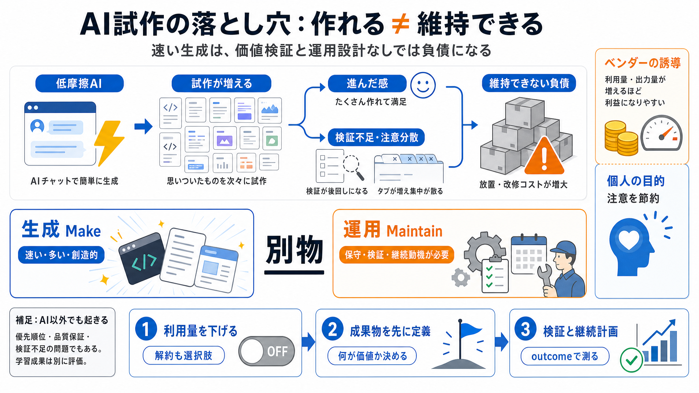

Why Is AI Making My Job *Worse*? | Cal Newport - YouTube
This is not the first digital productivity technology to create ... tool that makes the internet more boring 57:02 Deep …

This is not the first digital productivity technology to create ... tool that makes the internet more boring 57:02 Deep …
" Cal Newport Authorot of Deep Work. omnexis.ai's profile ... Now, with all these productivity tools and AI, the expecta…
(It’s Not.)Cal Newport 24K views • 6 days ago Live Playlist ()Mix (50+)](https://www.youtube.com/watch?v=5GezB1XyiQo)[32…
#1067 - Cal Newport - The collapse of modern attention (and how to get it back) - Modern Wisdom | Wave AI Podcast Notes.…
without requiring complex systems or productivity tools. 4 ... space, resulting in industry-leading employee retention. …